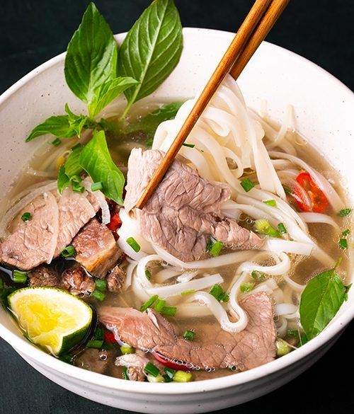

Navigation

Poulet Teriyaki (Japon)
-
Ingrédients :
- 500g de blanc de poulet
- 4 c. à soupe de sauce soja
- 2 c. à soupe de sucre
- 2 c. à soupe de mirin
- 1 c. à soupe d’huile
-
Instructions :
- Coupez le poulet en morceaux.
- Mélangez sauce soja, sucre, mirin.
- Faites revenir le poulet dans l’huile.
- Ajoutez la sauce et laissez caraméliser.

Pad Thaï (Thaïlande)
-
Ingrédients :
- 200g de nouilles de riz
- 2 œufs
- 100g de crevettes
- 2 c. à soupe de sauce tamarin
- Cacahuètes, soja, citron vert
-
Instructions :
- Faites cuire les nouilles.
- Faites revenir les œufs et crevettes.
- Ajoutez les nouilles et la sauce.
- Parsemez de cacahuètes et servez avec du citron.

Bœuf Bulgogi (Corée)
-
Ingrédients :
- 400g de bœuf émincé
- 2 c. à soupe de sauce soja
- 1 c. à soupe de sucre
- 1 poire asiatique râpée
- 1 oignon
-
Instructions :
- Faites mariner le bœuf avec les ingrédients.
- Laissez reposer 30 min.
- Faites sauter à feu vif.
- Servez avec du riz.

Riz Cantonais (Chine)
-
Ingrédients :
- 300g de riz cuit
- 2 œufs
- 100g de jambon
- 100g de petits pois
- 2 oignons nouveaux
-
Instructions :
- Battez les œufs et faites-les cuire en omelette.
- Faites revenir le riz, jambon, petits pois et oignons.
- Ajoutez l’omelette coupée en morceaux.
- Mélangez et servez chaud.

Curry Indien Végétarien (Inde)
-
Ingrédients :
- 2 pommes de terre
- 2 carottes
- 100g de pois chiches
- 1 oignon
- 2 c. à soupe de pâte de curry
- Lait de coco
-
Instructions :
- Faites revenir l’oignon et la pâte de curry.
- Ajoutez les légumes et pois chiches.
- Versez le lait de coco et laissez mijoter.
- Servez avec du riz basmati.

Pho (Vietnam)
-
Ingrédients :
- 200g de nouilles de riz
- 200g de bœuf finement tranché
- 1L de bouillon de bœuf
- Herbes fraîches (coriandre, basilic)
- Oignon, citron vert
-
Instructions :
- Faites cuire les nouilles.
- Chauffez le bouillon avec l’oignon.
- Ajoutez le bœuf et les nouilles dans le bol.
- Versez le bouillon chaud et ajoutez les herbes.